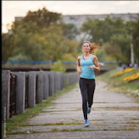
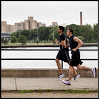
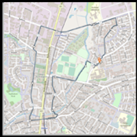
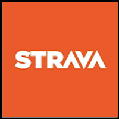
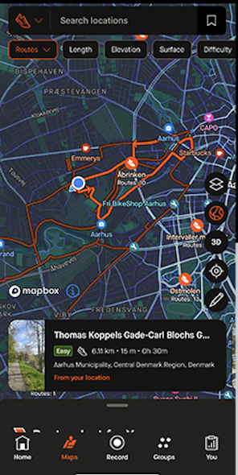

Hvor skal du løbe hen næste gang?



Er du på udkig efter nye løberuter at udforske? At løbe den samme rute igen og igen kan blive ensformigt, og det kan være svært at finde motivationen til at komme ud. Heldigvis er der mange fantastiske steder, du kan løbe, som giver dig en chance for at opleve smukke seværdigheder undervejs.
Med en app til løberuter kan du nemt finde inspiration til nye ruter i dit nærområde. En mulighed er Strava, der ikke kun tilbyder GPS-sporing, men også har et væld af brugergenererede ruter og forslag.
Forestil dig at løbe langs en smuk kystlinje, gennem frodige skove eller i byens pulserende gader, mens du nyder seværdighederne omkring dig. At variere dine løberuter kan gøre træningen mere spændende og motiverende. Med en app til løberuter som Strava kan du desuden planlægge dine ruter på forhånd og tilføje interessante stop undervejs, hvilket gør løbeturen til en endnu bedre oplevelse.
Er du klar til at tage din løbetræning til næste niveau? Download Strava i dag, og begynd at udforske de mange muligheder, der venter på dig. Gå på opdagelse, find nye løberuter og lad dig inspirere af de fantastiske seværdigheder, du kan opleve på vejen. Kom ud, løb, og mærk den lækre følelse, når du er kommet hjem igen.

